Dashboard Declarant
DeclarantIl portale delle Smart Guide è uno spazio digitale che raccoglie risorse pratiche e aggiornate in un unico ambiente intuitivo. Strumenti chiari e organizzati per organizzarti e trovare subito ciò che ti serve.
01.
Dashboard
Una panoramica sulla Dashboard del Declarant.
La Dashboard
Panoramica sulla pagina d'ingresso del portale
Nella Dashboard sono mostrate le interfacce e le funzionalità disponibili all'interno della home page, differenziate in base al profilo dell'utente autenticato.
La home page costituisce il punto di ingresso operativo al sistema e consente l'accesso immediato alle principali aree applicative, oltre alla visualizzazione sintetica dello stato delle attività in corso, delle comunicazioni pubblicate e delle informazioni operative relative alle soste e agli obblighi di dichiarazione.
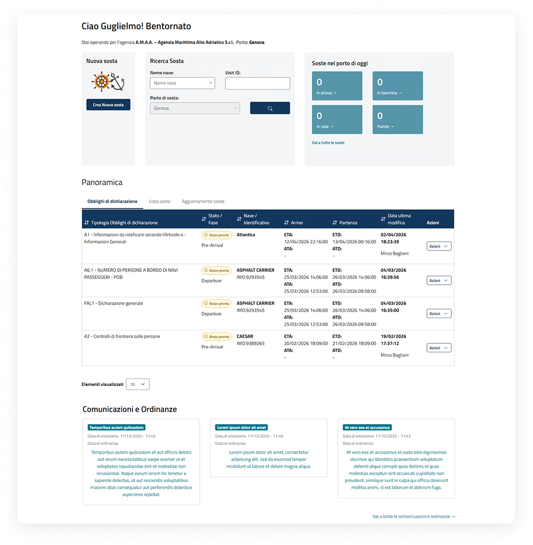
Intestazione
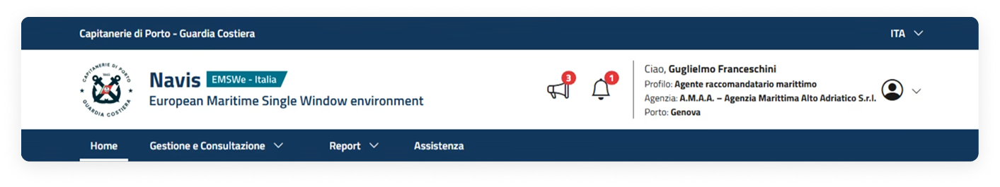
Comunicazioni
Nella barra di navigazione è presente l'icona del megafono che riporta il numero di comunicazioni ricevute e non ancora lette da parte dell'utente. Selezionando l'icona si accede alla pagina delle comunicazioni ricevute.
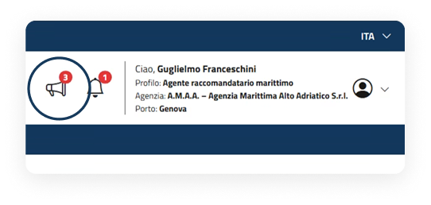
Notifiche
Nella barra di navigazione è presente l'icona della campanella che riporta il numero di notifiche ricevute e non ancora lette da parte dell'utente. Selezionando l'icona si accede alla pagina delle notifiche ricevute.
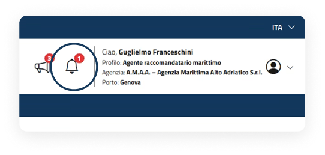
Sezione profilo
L'icona del profilo consente di accedere a un menu a tendina contenente le seguenti voci: La mia utenza, Le mie richieste, Cambia Profilo ed Esci.
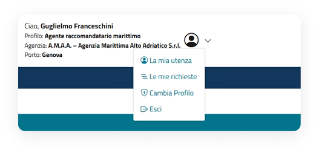
La Dashboard — Comunicazioni
Funzionalità in pagina
Accedendo alla pagina è già presente l'elenco delle comunicazioni. Per ricercare in maniera più dettagliata le comunicazioni, è necessario aggiungere almeno un parametro tra quelli disponibili nei filtri base o, per rendere i risultati più precisi, nei filtri avanzati. La schermata è suddivisa nelle seguenti tre sezioni:
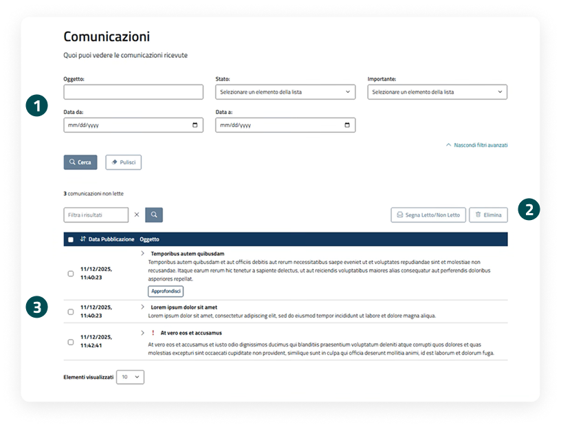
Sezione filtri
La sezione filtri consente di ricercare le comunicazioni utilizzando diversi criteri, tra cui Oggetto, Stato, Importante e Data.
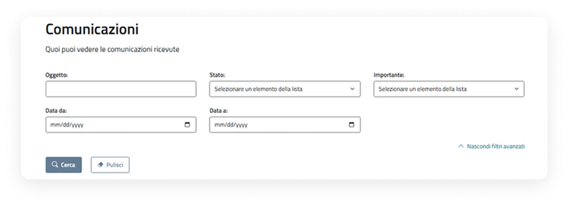
Azioni sulla tabella
È possibile eseguire operazioni massive, quali: segnare le comunicazioni come lette/non lette o eliminarle, selezionando uno o più comunicazione tramite checkbox e cliccare sui rispettivi pulsanti. È possibile filtrare ulteriormente i risultati di ricerca valorizzando il relativo campo.
Visualizzazione comunicazioni tramite tabella
I risultati sono visualizzati in una tabella con data decrescente di pubblicazione e oggetto; l'utente può entrare nel dettaglio cliccando il pulsante "Approfondisci". Le comunicazioni impostate come già lette non risulteranno più evidenziate all'interno dell'elenco.
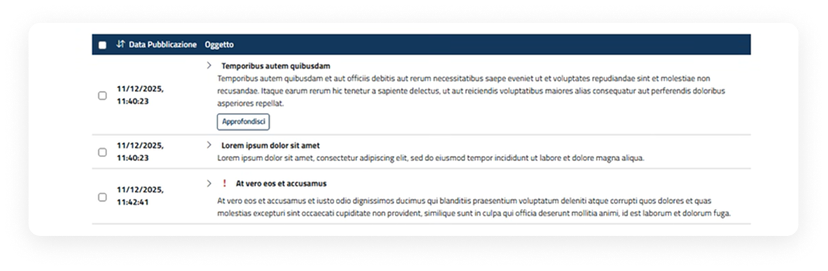
La Dashboard — Notifiche
Funzionalità in pagina
Accedendo alla pagina è già presente l'elenco delle notifiche. Per ricercare in maniera più dettagliata le notifiche, è necessario aggiungere almeno un parametro tra quelli disponibili nei filtri base o, per rendere i risultati più precisi, nei filtri avanzati. La schermata è suddivisa nelle seguenti tre sezioni:
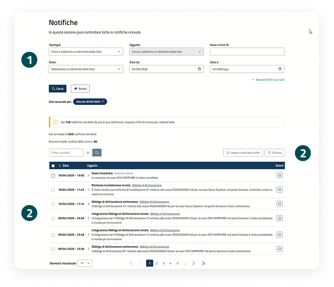
Sezione filtri
La sezione filtri consente di ricercare le notifiche utilizzando diversi criteri, tra cui Tipologia, Oggetto, Nave o Visit ID, Stato e Data.
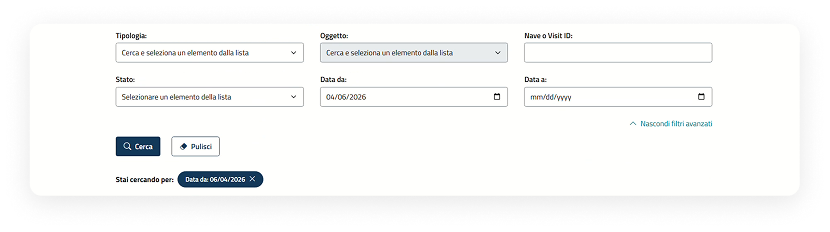
Azioni sulla tabella
È possibile eseguire operazioni massive, quali: segnare le notifiche come lette/non lette o eliminarle, selezionando uno o più comunicazione tramite checkbox e cliccare sui rispettivi pulsanti. È possibile filtrare ulteriormente i risultati di ricerca valorizzando il relativo campo.
Visualizzazione notifiche tramite tabella
I risultati di ricerca sono visualizzati in una tabella con data decrescente di ricezione e oggetto. Le notifiche possono essere impostate come lette/non lette cliccando il pulsante con l'icona della posta. Le notifiche impostate come già lette non risulteranno più evidenziate all'interno dell'elenco.
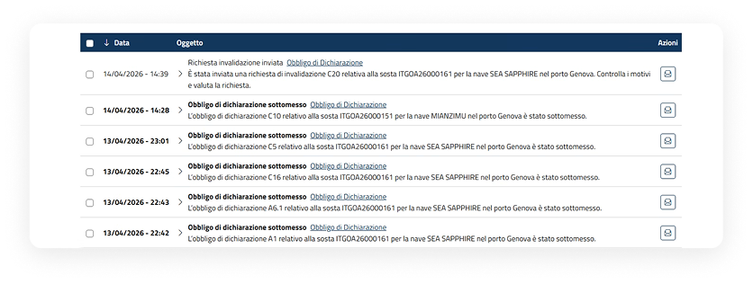
Le notifiche verranno automaticamente rimosse dopo 60 giorni.
Il menu
Le voci per la navigazione
Il menu consente di accedere rapidamente alle principali sezioni del sistema, organizzate per categoria, in base al tipo di utente che accede.
Al passaggio del mouse sulle sezioni principali, viene visualizzato un menu a tendina che mostra le voci disponibili, facilitando la navigazione.
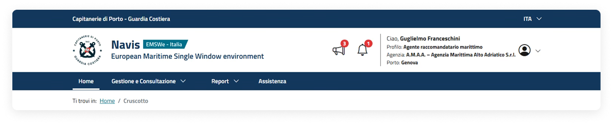
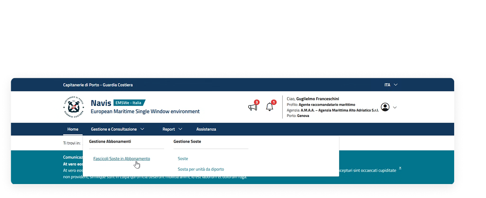
Sezioni riepilogative e funzionali
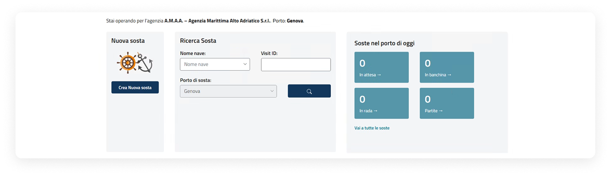
Creazione nuova sosta
La sezione "Nuova sosta" consente di accedere al flusso di creazione di una nuova sosta cliccando l'apposito pulsante.
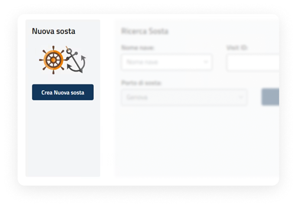
Ricerca sosta
Consente di effettuare una ricerca puntuale di una sosta tramite i seguenti filtri:
- Nome nave;
- Visit ID;
- Porto di sosta.
Il pulsante "Cerca" avvia la ricerca.
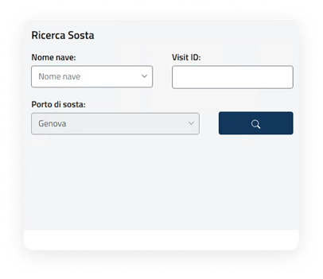
Soste nel porto di oggi
La sezione riporta il numero di soste odierne nel porto, suddivise per stato.
- le informazioni sono organizzate in card cliccabili;
- ogni card rimanda alla pagina "Soste" pre-filtrata;
- il link "Vai a tutte le soste" permette di visualizzare l'elenco completo delle soste.
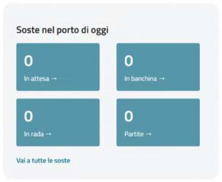
Panoramica
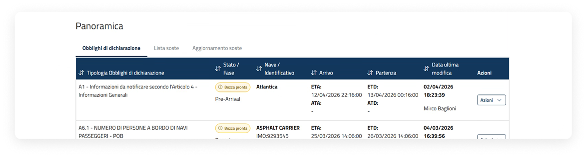
Informazioni principali
La tabella riporta le attività relative agli obblighi di dichiarazione con le seguenti informazioni principali: Tipologia Obblighi di Dichiarazione, Stato/Fase, Nave/Identificativo, Arrivo (ETA e ATA), Partenza (ETD e ATD) e Data ultima modifica.
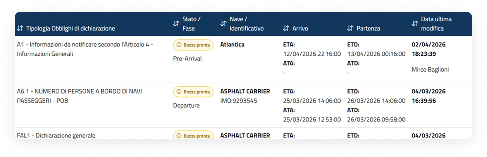
Azioni disponibili
- visualizza;
- scarica;
- storico variazioni.
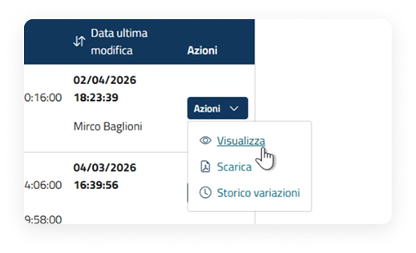
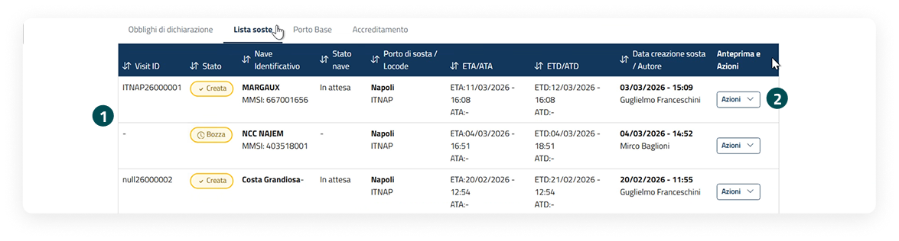
Informazioni principali
La tabella riporta le attività relative alle soste con le seguenti informazioni principali: Visit ID, Stato, Nave Identificativo, Stato nave, Porto di sosta/Locode, ETA/ATA, ETD/ATD, Data creazione sosta/Autore.
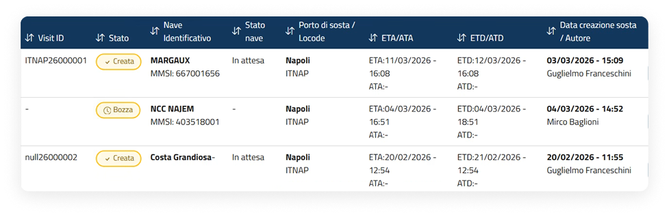
Azioni disponibili
- Visualizza;
- Elimina;
- Scarica.
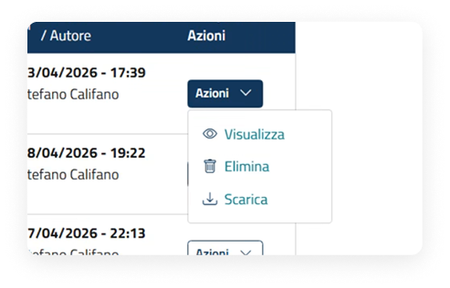
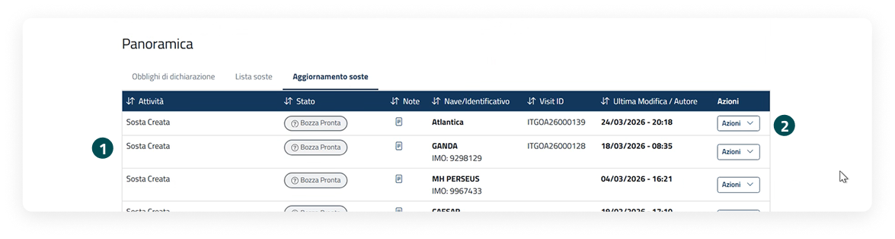
Informazioni principali
La tabella visualizza gli aggiornamenti relativi alle soste, includendo: Attività, Stato, Note, Nave/Identificativo, Visit ID, Ultima modifica/Autore.
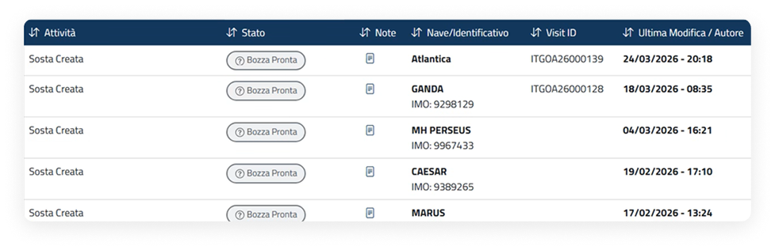
Azioni disponibili
- Visualizza.
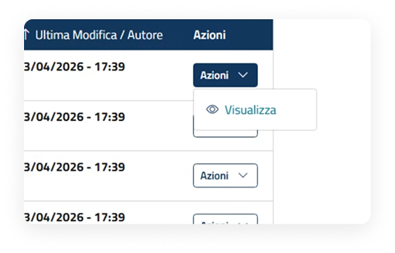
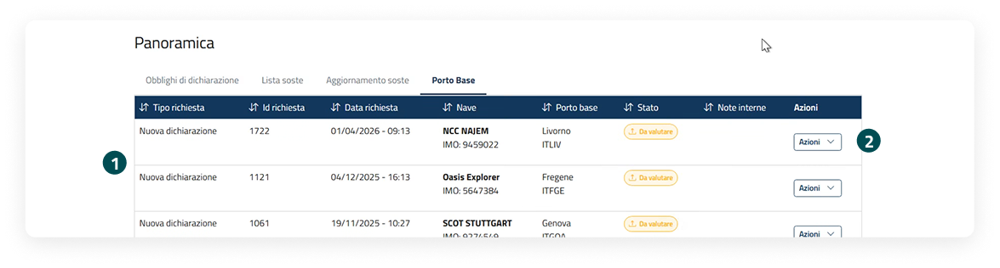
Informazioni principali
La tabella mostra le richieste di accreditamento con le seguenti informazioni: Tipo richiesta, ID richiesta, Data richiesta, Nave, Porto Base e Stato.
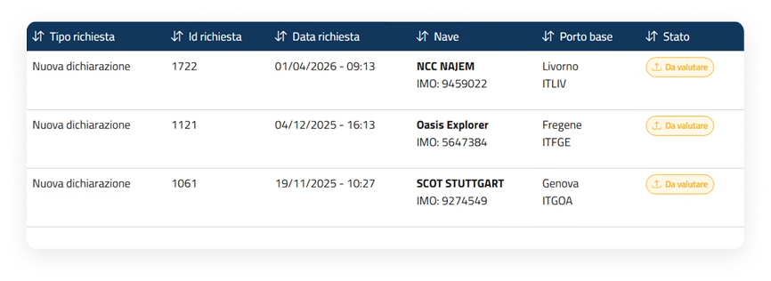
Azioni disponibili
- Visualizza;
- Scarica;
- Storico variazioni.
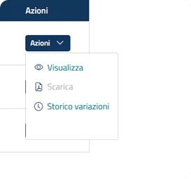
Comunicazioni e ordinanze
L'ultima comunicazione viene presentata, opportunamente evidenziata, all'inizio della Dashboard sotto l'intestazione.
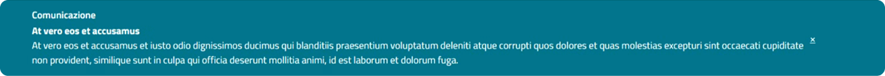
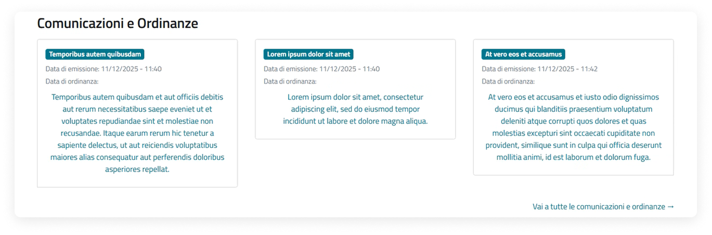
Le ultime tre comunicazioni sono visibili all'interno della sezione "Comunicazioni e ordinanze". Inoltre, all'interno della sezione deve essere presente il link "Vai a tutte le comunicazioni", che consente di accedere a una vista estesa contenente l'archivio completo delle comunicazioni pubblicate.